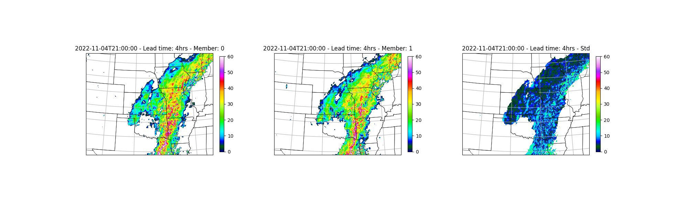
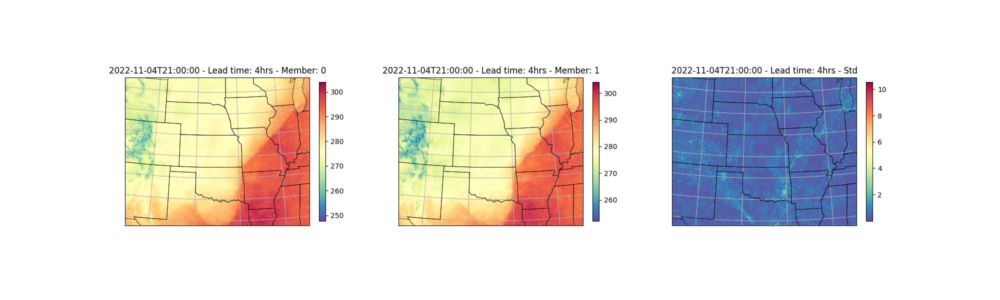

Note
Go to the end to download the full example code.
Running StormCast Ensemble Inference#
Ensemble StormCast inference workflow.
This example will demonstrate how to run a simple inference workflow to generate a ensemble forecast using StormCast. For details about the stormcast model, see
# /// script
# dependencies = [
# "earth2studio[data,stormcast] @ git+https://github.com/NVIDIA/earth2studio.git@0.15.0",
# "cartopy",
# ]
# ///
Set Up#
All workflows inside Earth2Studio require constructed components to be
handed to them. In this example, let’s take a look at the most basic ensemble workflow:
earth2studio.run.ensemble().
Thus, we need the following:
Prognostic Model: Use the built in StormCast Model
earth2studio.models.px.StormCast.- perturbation_method: Use the Zero Method
earth2studio.perturbation.Zero. We will not perturb the initial data because StormCast has stochastic generation of ensemble members.
- perturbation_method: Use the Zero Method
Datasource: Pull data from the HRRR data api
earth2studio.data.HRRR.IO Backend: Let’s save the outputs into a Zarr store
earth2studio.io.ZarrBackend.
StormCast also requires a conditioning data source. We use a forecast data source here,
ARCO earth2studio.data.ARCO, but a forecast data source such as GFS_FX
could also be used with appropriate time stamps.
import numpy as np
from loguru import logger
from tqdm import tqdm
logger.remove()
logger.add(lambda msg: tqdm.write(msg, end=""), colorize=True)
import os
os.makedirs("outputs", exist_ok=True)
from dotenv import load_dotenv
load_dotenv() # TODO: make common example prep function
from earth2studio.data import ARCO, HRRR
from earth2studio.io import ZarrBackend
from earth2studio.models.px import StormCast
from earth2studio.perturbation import Zero
# Create and set the conditioning data source
conditioning_data_source = ARCO()
# Load the default model package which downloads the check point from NGC
package = StormCast.load_default_package()
model = StormCast.load_model(package, conditioning_data_source=conditioning_data_source)
# Instantiate the (Zero) perturbation method
z = Zero()
# Create the data source
data = HRRR()
# Create the IO handler, store in memory
io = ZarrBackend()
Execute the Workflow#
With all components initialized, running the workflow is a single line of Python code. Workflow will return the provided IO object back to the user, which can be used to then post process. Some have additional APIs that can be handy for post-processing or saving to file. Check the API docs for more information.
For the forecast we will predict for 4 hours
import earth2studio.run as run
nsteps = 4
nensemble = 4
batch_size = 2
date = "2022-11-04T21:00:00"
io = run.ensemble(
[date],
nsteps,
nensemble,
model,
data,
io,
z,
batch_size=batch_size,
output_coords={"variable": np.array(["t2m", "refc"])},
)
print(io.root.tree())
2026-05-25 23:44:46.839 | INFO | earth2studio.run:ensemble:328 - Running ensemble inference!
2026-05-25 23:44:46.839 | INFO | earth2studio.run:ensemble:336 - Inference device: cuda
Fetching HRRR data: 0%| | 0/99 [00:00<?, ?it/s]
2026-05-25 23:44:47.728 | DEBUG | earth2studio.data.hrrr:fetch_array:484 - Fetching HRRR grib file: noaa-hrrr-bdp-pds/hrrr.20221104/conus/hrrr.t21z.wrfnatf00.grib2 183132819-1223801
Fetching HRRR data: 0%| | 0/99 [00:00<?, ?it/s]
2026-05-25 23:44:47.749 | DEBUG | earth2studio.data.hrrr:fetch_array:484 - Fetching HRRR grib file: noaa-hrrr-bdp-pds/hrrr.20221104/conus/hrrr.t21z.wrfnatf00.grib2 96571911-1022533
Fetching HRRR data: 0%| | 0/99 [00:00<?, ?it/s]
2026-05-25 23:44:47.768 | DEBUG | earth2studio.data.hrrr:fetch_array:484 - Fetching HRRR grib file: noaa-hrrr-bdp-pds/hrrr.20221104/conus/hrrr.t21z.wrfnatf00.grib2 55982755-2226204
Fetching HRRR data: 0%| | 0/99 [00:00<?, ?it/s]
2026-05-25 23:44:47.789 | DEBUG | earth2studio.data.hrrr:fetch_array:484 - Fetching HRRR grib file: noaa-hrrr-bdp-pds/hrrr.20221104/conus/hrrr.t21z.wrfnatf00.grib2 6769853-1127971
Fetching HRRR data: 0%| | 0/99 [00:00<?, ?it/s]
2026-05-25 23:44:47.809 | DEBUG | earth2studio.data.hrrr:fetch_array:484 - Fetching HRRR grib file: noaa-hrrr-bdp-pds/hrrr.20221104/conus/hrrr.t21z.wrfnatf00.grib2 325121285-1575223
Fetching HRRR data: 0%| | 0/99 [00:00<?, ?it/s]
2026-05-25 23:44:47.830 | DEBUG | earth2studio.data.hrrr:fetch_array:484 - Fetching HRRR grib file: noaa-hrrr-bdp-pds/hrrr.20221104/conus/hrrr.t21z.wrfnatf00.grib2 147409055-2156223
Fetching HRRR data: 0%| | 0/99 [00:00<?, ?it/s]
2026-05-25 23:44:47.851 | DEBUG | earth2studio.data.hrrr:fetch_array:484 - Fetching HRRR grib file: noaa-hrrr-bdp-pds/hrrr.20221104/conus/hrrr.t21z.wrfnatf00.grib2 158633887-1042140
Fetching HRRR data: 0%| | 0/99 [00:00<?, ?it/s]
2026-05-25 23:44:47.870 | DEBUG | earth2studio.data.hrrr:fetch_array:484 - Fetching HRRR grib file: noaa-hrrr-bdp-pds/hrrr.20221104/conus/hrrr.t21z.wrfnatf00.grib2 4489181-2280672
Fetching HRRR data: 0%| | 0/99 [00:00<?, ?it/s]
2026-05-25 23:44:47.891 | DEBUG | earth2studio.data.hrrr:fetch_array:484 - Fetching HRRR grib file: noaa-hrrr-bdp-pds/hrrr.20221104/conus/hrrr.t21z.wrfnatf00.grib2 81200635-1030458
Fetching HRRR data: 0%| | 0/99 [00:00<?, ?it/s]
2026-05-25 23:44:47.910 | DEBUG | earth2studio.data.hrrr:fetch_array:484 - Fetching HRRR grib file: noaa-hrrr-bdp-pds/hrrr.20221104/conus/hrrr.t21z.wrfnatf00.grib2 264613752-2200924
Fetching HRRR data: 0%| | 0/99 [00:00<?, ?it/s]
2026-05-25 23:44:47.931 | DEBUG | earth2studio.data.hrrr:fetch_array:484 - Fetching HRRR grib file: noaa-hrrr-bdp-pds/hrrr.20221104/conus/hrrr.t21z.wrfnatf00.grib2 95113691-1458220
Fetching HRRR data: 0%| | 0/99 [00:00<?, ?it/s]
2026-05-25 23:44:47.952 | DEBUG | earth2studio.data.hrrr:fetch_array:484 - Fetching HRRR grib file: noaa-hrrr-bdp-pds/hrrr.20221104/conus/hrrr.t21z.wrfnatf00.grib2 184356620-941070
Fetching HRRR data: 0%| | 0/99 [00:00<?, ?it/s]
2026-05-25 23:44:47.971 | DEBUG | earth2studio.data.hrrr:fetch_array:484 - Fetching HRRR grib file: noaa-hrrr-bdp-pds/hrrr.20221104/conus/hrrr.t21z.wrfnatf00.grib2 35605910-1348122
Fetching HRRR data: 0%| | 0/99 [00:00<?, ?it/s]
2026-05-25 23:44:47.992 | DEBUG | earth2studio.data.hrrr:fetch_array:484 - Fetching HRRR grib file: noaa-hrrr-bdp-pds/hrrr.20221104/conus/hrrr.t21z.wrfnatf00.grib2 174769676-2107905
Fetching HRRR data: 0%| | 0/99 [00:00<?, ?it/s]
2026-05-25 23:44:48.012 | DEBUG | earth2studio.data.hrrr:fetch_array:484 - Fetching HRRR grib file: noaa-hrrr-bdp-pds/hrrr.20221104/conus/hrrr.t21z.wrfnatf00.grib2 272899230-838733
Fetching HRRR data: 0%| | 0/99 [00:00<?, ?it/s]
2026-05-25 23:44:48.031 | DEBUG | earth2studio.data.hrrr:fetch_array:484 - Fetching HRRR grib file: noaa-hrrr-bdp-pds/hrrr.20221104/conus/hrrr.t21z.wrfnatf00.grib2 79811259-1389376
Fetching HRRR data: 0%| | 0/99 [00:00<?, ?it/s]
2026-05-25 23:44:48.052 | DEBUG | earth2studio.data.hrrr:fetch_array:484 - Fetching HRRR grib file: noaa-hrrr-bdp-pds/hrrr.20221104/conus/hrrr.t21z.wrfnatf00.grib2 70750032-2224001
Fetching HRRR data: 0%| | 0/99 [00:00<?, ?it/s]
2026-05-25 23:44:48.073 | DEBUG | earth2studio.data.hrrr:fetch_array:484 - Fetching HRRR grib file: noaa-hrrr-bdp-pds/hrrr.20221104/conus/hrrr.t21z.wrfnatf00.grib2 377553539-821527
Fetching HRRR data: 0%| | 0/99 [00:00<?, ?it/s]
2026-05-25 23:44:48.092 | DEBUG | earth2studio.data.hrrr:fetch_array:484 - Fetching HRRR grib file: noaa-hrrr-bdp-pds/hrrr.20221104/conus/hrrr.t21z.wrfnatf00.grib2 375618942-1101032
Fetching HRRR data: 0%| | 0/99 [00:00<?, ?it/s]
2026-05-25 23:44:48.112 | DEBUG | earth2studio.data.hrrr:fetch_array:484 - Fetching HRRR grib file: noaa-hrrr-bdp-pds/hrrr.20221104/conus/hrrr.t21z.wrfnatf00.grib2 273737963-828554
Fetching HRRR data: 0%| | 0/99 [00:00<?, ?it/s]
2026-05-25 23:44:48.130 | DEBUG | earth2studio.data.hrrr:fetch_array:484 - Fetching HRRR grib file: noaa-hrrr-bdp-pds/hrrr.20221104/conus/hrrr.t21z.wrfnatf00.grib2 76303760-2433694
Fetching HRRR data: 0%| | 0/99 [00:00<?, ?it/s]
2026-05-25 23:44:48.152 | DEBUG | earth2studio.data.hrrr:fetch_array:484 - Fetching HRRR grib file: noaa-hrrr-bdp-pds/hrrr.20221104/conus/hrrr.t21z.wrfnatf00.grib2 85717411-2221322
Fetching HRRR data: 0%| | 0/99 [00:00<?, ?it/s]
2026-05-25 23:44:48.173 | DEBUG | earth2studio.data.hrrr:fetch_array:484 - Fetching HRRR grib file: noaa-hrrr-bdp-pds/hrrr.20221104/conus/hrrr.t21z.wrfnatf00.grib2 327527983-852819
Fetching HRRR data: 0%| | 0/99 [00:00<?, ?it/s]
2026-05-25 23:44:48.192 | DEBUG | earth2studio.data.hrrr:fetch_array:484 - Fetching HRRR grib file: noaa-hrrr-bdp-pds/hrrr.20221104/conus/hrrr.t21z.wrfnatf00.grib2 141697242-1428027
Fetching HRRR data: 0%| | 0/99 [00:00<?, ?it/s]
2026-05-25 23:44:48.213 | DEBUG | earth2studio.data.hrrr:fetch_array:484 - Fetching HRRR grib file: noaa-hrrr-bdp-pds/hrrr.20221104/conus/hrrr.t21z.wrfnatf00.grib2 66163006-1064784
Fetching HRRR data: 0%| | 0/99 [00:00<?, ?it/s]
2026-05-25 23:44:48.233 | DEBUG | earth2studio.data.hrrr:fetch_array:484 - Fetching HRRR grib file: noaa-hrrr-bdp-pds/hrrr.20221104/conus/hrrr.t21z.wrfnatf00.grib2 116871633-2212091
Fetching HRRR data: 0%| | 0/99 [00:00<?, ?it/s]
2026-05-25 23:44:48.255 | DEBUG | earth2studio.data.hrrr:fetch_array:484 - Fetching HRRR grib file: noaa-hrrr-bdp-pds/hrrr.20221104/conus/hrrr.t21z.wrfnatf00.grib2 200679562-2278041
Fetching HRRR data: 0%| | 0/99 [00:00<?, ?it/s]
2026-05-25 23:44:48.276 | DEBUG | earth2studio.data.hrrr:fetch_array:484 - Fetching HRRR grib file: noaa-hrrr-bdp-pds/hrrr.20221104/conus/hrrr.t21z.wrfnatf00.grib2 110702395-1498162
Fetching HRRR data: 0%| | 0/99 [00:00<?, ?it/s]
2026-05-25 23:44:48.297 | DEBUG | earth2studio.data.hrrr:fetch_array:484 - Fetching HRRR grib file: noaa-hrrr-bdp-pds/hrrr.20221104/conus/hrrr.t21z.wrfnatf00.grib2 128968781-1071219
Fetching HRRR data: 0%| | 0/99 [00:00<?, ?it/s]
2026-05-25 23:44:48.316 | DEBUG | earth2studio.data.hrrr:fetch_array:484 - Fetching HRRR grib file: noaa-hrrr-bdp-pds/hrrr.20221104/conus/hrrr.t21z.wrfnatf00.grib2 112200557-1033438
Fetching HRRR data: 0%| | 0/99 [00:00<?, ?it/s]
2026-05-25 23:44:48.336 | DEBUG | earth2studio.data.hrrr:fetch_array:484 - Fetching HRRR grib file: noaa-hrrr-bdp-pds/hrrr.20221104/conus/hrrr.t21z.wrfnatf00.grib2 208847160-1061355
Fetching HRRR data: 0%| | 0/99 [00:00<?, ?it/s]
2026-05-25 23:44:48.355 | DEBUG | earth2studio.data.hrrr:fetch_array:484 - Fetching HRRR grib file: noaa-hrrr-bdp-pds/hrrr.20221104/conus/hrrr.t21z.wrfnatf00.grib2 127936406-1032375
Fetching HRRR data: 0%| | 0/99 [00:00<?, ?it/s]
2026-05-25 23:44:48.374 | DEBUG | earth2studio.data.hrrr:fetch_array:484 - Fetching HRRR grib file: noaa-hrrr-bdp-pds/hrrr.20221104/conus/hrrr.t21z.wrfnatf00.grib2 82231093-1051859
Fetching HRRR data: 0%| | 0/99 [00:00<?, ?it/s]
2026-05-25 23:44:48.394 | DEBUG | earth2studio.data.hrrr:fetch_array:484 - Fetching HRRR grib file: noaa-hrrr-bdp-pds/hrrr.20221104/conus/hrrr.t21z.wrfnatf00.grib2 64819769-1343237
Fetching HRRR data: 0%| | 0/99 [00:00<?, ?it/s]
2026-05-25 23:44:48.414 | DEBUG | earth2studio.data.hrrr:fetch_array:484 - Fetching HRRR grib file: noaa-hrrr-bdp-pds/hrrr.20221104/conus/hrrr.t21z.wrfnatf00.grib2 143125269-1011715
Fetching HRRR data: 0%| | 0/99 [00:00<?, ?it/s]
2026-05-25 23:44:48.434 | DEBUG | earth2studio.data.hrrr:fetch_array:484 - Fetching HRRR grib file: noaa-hrrr-bdp-pds/hrrr.20221104/conus/hrrr.t21z.wrfnatf00.grib2 50114262-1325963
Fetching HRRR data: 0%| | 0/99 [00:00<?, ?it/s]
2026-05-25 23:44:48.455 | DEBUG | earth2studio.data.hrrr:fetch_array:484 - Fetching HRRR grib file: noaa-hrrr-bdp-pds/hrrr.20221104/conus/hrrr.t21z.wrfnatf00.grib2 38101561-1112473
Fetching HRRR data: 0%| | 0/99 [00:00<?, ?it/s]
2026-05-25 23:44:48.474 | DEBUG | earth2studio.data.hrrr:fetch_array:484 - Fetching HRRR grib file: noaa-hrrr-bdp-pds/hrrr.20221104/conus/hrrr.t21z.wrfnatf00.grib2 126454553-1481853
Fetching HRRR data: 0%| | 0/99 [00:00<?, ?it/s]
2026-05-25 23:44:48.495 | DEBUG | earth2studio.data.hrrr:fetch_array:484 - Fetching HRRR grib file: noaa-hrrr-bdp-pds/hrrr.20221104/conus/hrrr.t21z.wrfnatf00.grib2 97594444-1053062
Fetching HRRR data: 0%| | 0/99 [00:00<?, ?it/s]
2026-05-25 23:44:48.514 | DEBUG | earth2studio.data.hrrr:fetch_array:484 - Fetching HRRR grib file: noaa-hrrr-bdp-pds/hrrr.20221104/conus/hrrr.t21z.wrfnatf00.grib2 156287345-1360622
Fetching HRRR data: 0%| | 0/99 [00:00<?, ?it/s]
2026-05-25 23:44:48.535 | DEBUG | earth2studio.data.hrrr:fetch_array:484 - Fetching HRRR grib file: noaa-hrrr-bdp-pds/hrrr.20221104/conus/hrrr.t21z.wrfnatf00.grib2 67227790-1067111
Fetching HRRR data: 0%| | 0/99 [00:00<?, ?it/s]
2026-05-25 23:44:48.554 | DEBUG | earth2studio.data.hrrr:fetch_array:484 - Fetching HRRR grib file: noaa-hrrr-bdp-pds/hrrr.20221104/conus/hrrr.t21z.wrfnatf00.grib2 152813467-2485799
Fetching HRRR data: 0%| | 0/99 [00:00<?, ?it/s]
2026-05-25 23:44:48.576 | DEBUG | earth2studio.data.hrrr:fetch_array:484 - Fetching HRRR grib file: noaa-hrrr-bdp-pds/hrrr.20221104/conus/hrrr.t21z.wrfnatf00.grib2 52544280-1090181
Fetching HRRR data: 0%| | 0/99 [00:00<?, ?it/s]
2026-05-25 23:44:48.596 | DEBUG | earth2studio.data.hrrr:fetch_array:484 - Fetching HRRR grib file: noaa-hrrr-bdp-pds/hrrr.20221104/conus/hrrr.t21z.wrfnatf00.grib2 122930506-2477715
Fetching HRRR data: 0%| | 0/99 [00:00<?, ?it/s]
2026-05-25 23:44:48.617 | DEBUG | earth2studio.data.hrrr:fetch_array:484 - Fetching HRRR grib file: noaa-hrrr-bdp-pds/hrrr.20221104/conus/hrrr.t21z.wrfsfcf00.grib2 26658825-637820
Fetching HRRR data: 0%| | 0/99 [00:00<?, ?it/s]
2026-05-25 23:44:48.635 | DEBUG | earth2studio.data.hrrr:fetch_array:484 - Fetching HRRR grib file: noaa-hrrr-bdp-pds/hrrr.20221104/conus/hrrr.t21z.wrfnatf00.grib2 21731920-1363066
Fetching HRRR data: 0%| | 0/99 [00:00<?, ?it/s]
2026-05-25 23:44:48.656 | DEBUG | earth2studio.data.hrrr:fetch_array:484 - Fetching HRRR grib file: noaa-hrrr-bdp-pds/hrrr.20221104/conus/hrrr.t21z.wrfnatf00.grib2 144136984-1061844
Fetching HRRR data: 0%| | 0/99 [00:00<?, ?it/s]
2026-05-25 23:44:48.675 | DEBUG | earth2studio.data.hrrr:fetch_array:484 - Fetching HRRR grib file: noaa-hrrr-bdp-pds/hrrr.20221104/conus/hrrr.t21z.wrfnatf00.grib2 374978057-640885
Fetching HRRR data: 0%| | 0/99 [00:00<?, ?it/s]
2026-05-25 23:44:48.693 | DEBUG | earth2studio.data.hrrr:fetch_array:484 - Fetching HRRR grib file: noaa-hrrr-bdp-pds/hrrr.20221104/conus/hrrr.t21z.wrfnatf00.grib2 271641270-1257960
Fetching HRRR data: 0%| | 0/99 [00:00<?, ?it/s]
2026-05-25 23:44:48.712 | DEBUG | earth2studio.data.hrrr:fetch_array:484 - Fetching HRRR grib file: noaa-hrrr-bdp-pds/hrrr.20221104/conus/hrrr.t21z.wrfnatf00.grib2 24253280-1129901
Fetching HRRR data: 0%| | 0/99 [00:00<?, ?it/s]
2026-05-25 23:44:48.732 | DEBUG | earth2studio.data.hrrr:fetch_array:484 - Fetching HRRR grib file: noaa-hrrr-bdp-pds/hrrr.20221104/conus/hrrr.t21z.wrfnatf00.grib2 94042130-1071561
Fetching HRRR data: 0%| | 0/99 [00:01<?, ?it/s]
2026-05-25 23:44:48.751 | DEBUG | earth2studio.data.hrrr:fetch_array:484 - Fetching HRRR grib file: noaa-hrrr-bdp-pds/hrrr.20221104/conus/hrrr.t21z.wrfnatf00.grib2 209908515-907176
Fetching HRRR data: 0%| | 0/99 [00:01<?, ?it/s]
2026-05-25 23:44:48.770 | DEBUG | earth2studio.data.hrrr:fetch_array:484 - Fetching HRRR grib file: noaa-hrrr-bdp-pds/hrrr.20221104/conus/hrrr.t21z.wrfnatf00.grib2 270819986-821284
Fetching HRRR data: 0%| | 0/99 [00:01<?, ?it/s]
2026-05-25 23:44:48.789 | DEBUG | earth2studio.data.hrrr:fetch_array:484 - Fetching HRRR grib file: noaa-hrrr-bdp-pds/hrrr.20221104/conus/hrrr.t21z.wrfnatf00.grib2 91590172-2451958
Fetching HRRR data: 0%| | 0/99 [00:01<?, ?it/s]
2026-05-25 23:44:48.811 | DEBUG | earth2studio.data.hrrr:fetch_array:484 - Fetching HRRR grib file: noaa-hrrr-bdp-pds/hrrr.20221104/conus/hrrr.t21z.wrfsfcf00.grib2 38185540-1172707
Fetching HRRR data: 0%| | 0/99 [00:01<?, ?it/s]
2026-05-25 23:44:48.830 | DEBUG | earth2studio.data.hrrr:fetch_array:484 - Fetching HRRR grib file: noaa-hrrr-bdp-pds/hrrr.20221104/conus/hrrr.t21z.wrfnatf00.grib2 182184021-948798
Fetching HRRR data: 0%| | 0/99 [00:01<?, ?it/s]
2026-05-25 23:44:48.849 | DEBUG | earth2studio.data.hrrr:fetch_array:484 - Fetching HRRR grib file: noaa-hrrr-bdp-pds/hrrr.20221104/conus/hrrr.t21z.wrfsfcf00.grib2 0-448058
Fetching HRRR data: 0%| | 0/99 [00:01<?, ?it/s]
2026-05-25 23:44:48.863 | DEBUG | earth2studio.data.hrrr:fetch_array:484 - Fetching HRRR grib file: noaa-hrrr-bdp-pds/hrrr.20221104/conus/hrrr.t21z.wrfnatf00.grib2 10427641-1136665
Fetching HRRR data: 0%| | 0/99 [00:01<?, ?it/s]
2026-05-25 23:44:48.883 | DEBUG | earth2studio.data.hrrr:fetch_array:484 - Fetching HRRR grib file: noaa-hrrr-bdp-pds/hrrr.20221104/conus/hrrr.t21z.wrfnatf00.grib2 34509703-1096207
Fetching HRRR data: 0%| | 0/99 [00:01<?, ?it/s]
2026-05-25 23:44:48.903 | DEBUG | earth2studio.data.hrrr:fetch_array:484 - Fetching HRRR grib file: noaa-hrrr-bdp-pds/hrrr.20221104/conus/hrrr.t21z.wrfnatf00.grib2 268628273-2191713
Fetching HRRR data: 0%| | 0/99 [00:01<?, ?it/s]
2026-05-25 23:44:48.924 | DEBUG | earth2studio.data.hrrr:fetch_array:484 - Fetching HRRR grib file: noaa-hrrr-bdp-pds/hrrr.20221104/conus/hrrr.t21z.wrfnatf00.grib2 376719974-833565
Fetching HRRR data: 0%| | 0/99 [00:01<?, ?it/s]
2026-05-25 23:44:48.943 | DEBUG | earth2studio.data.hrrr:fetch_array:484 - Fetching HRRR grib file: noaa-hrrr-bdp-pds/hrrr.20221104/conus/hrrr.t21z.wrfnatf00.grib2 78737454-1073805
Fetching HRRR data: 0%| | 0/99 [00:01<?, ?it/s]
2026-05-25 23:44:48.962 | DEBUG | earth2studio.data.hrrr:fetch_array:484 - Fetching HRRR grib file: noaa-hrrr-bdp-pds/hrrr.20221104/conus/hrrr.t21z.wrfsfcf00.grib2 47584002-2381615
Fetching HRRR data: 0%| | 0/99 [00:01<?, ?it/s]
2026-05-25 23:44:48.972 | DEBUG | earth2studio.data.hrrr:fetch_array:484 - Fetching HRRR grib file: noaa-hrrr-bdp-pds/hrrr.20221104/conus/hrrr.t21z.wrfnatf00.grib2 179710999-2473022
Fetching HRRR data: 0%| | 0/99 [00:01<?, ?it/s]
2026-05-25 23:44:48.994 | DEBUG | earth2studio.data.hrrr:fetch_array:484 - Fetching HRRR grib file: noaa-hrrr-bdp-pds/hrrr.20221104/conus/hrrr.t21z.wrfnatf00.grib2 326696508-831475
Fetching HRRR data: 0%| | 0/99 [00:01<?, ?it/s]
2026-05-25 23:44:49.013 | DEBUG | earth2studio.data.hrrr:fetch_array:484 - Fetching HRRR grib file: noaa-hrrr-bdp-pds/hrrr.20221104/conus/hrrr.t21z.wrfnatf00.grib2 7897824-1393478
Fetching HRRR data: 0%| | 0/99 [00:01<?, ?it/s]
2026-05-25 23:44:49.033 | DEBUG | earth2studio.data.hrrr:fetch_array:484 - Fetching HRRR grib file: noaa-hrrr-bdp-pds/hrrr.20221104/conus/hrrr.t21z.wrfnatf00.grib2 9291302-1136339
Fetching HRRR data: 0%| | 0/99 [00:01<?, ?it/s]
2026-05-25 23:44:49.052 | DEBUG | earth2studio.data.hrrr:fetch_array:484 - Fetching HRRR grib file: noaa-hrrr-bdp-pds/hrrr.20221104/conus/hrrr.t21z.wrfnatf00.grib2 138196216-2483649
Fetching HRRR data: 0%| | 0/99 [00:01<?, ?it/s]
2026-05-25 23:44:49.074 | DEBUG | earth2studio.data.hrrr:fetch_array:484 - Fetching HRRR grib file: noaa-hrrr-bdp-pds/hrrr.20221104/conus/hrrr.t21z.wrfnatf00.grib2 63743189-1076580
Fetching HRRR data: 0%| | 0/99 [00:01<?, ?it/s]
2026-05-25 23:44:49.093 | DEBUG | earth2studio.data.hrrr:fetch_array:484 - Fetching HRRR grib file: noaa-hrrr-bdp-pds/hrrr.20221104/conus/hrrr.t21z.wrfnatf00.grib2 207926438-920722
Fetching HRRR data: 0%| | 0/99 [00:01<?, ?it/s]
2026-05-25 23:44:49.113 | DEBUG | earth2studio.data.hrrr:fetch_array:484 - Fetching HRRR grib file: noaa-hrrr-bdp-pds/hrrr.20221104/conus/hrrr.t21z.wrfnatf00.grib2 107171888-2466878
Fetching HRRR data: 0%| | 0/99 [00:01<?, ?it/s]
2026-05-25 23:44:49.134 | DEBUG | earth2studio.data.hrrr:fetch_array:484 - Fetching HRRR grib file: noaa-hrrr-bdp-pds/hrrr.20221104/conus/hrrr.t21z.wrfnatf00.grib2 49029775-1084487
Fetching HRRR data: 0%| | 0/99 [00:01<?, ?it/s]
2026-05-25 23:44:49.154 | DEBUG | earth2studio.data.hrrr:fetch_array:484 - Fetching HRRR grib file: noaa-hrrr-bdp-pds/hrrr.20221104/conus/hrrr.t21z.wrfnatf00.grib2 13759195-2231917
Fetching HRRR data: 0%| | 0/99 [00:01<?, ?it/s]
2026-05-25 23:44:49.175 | DEBUG | earth2studio.data.hrrr:fetch_array:484 - Fetching HRRR grib file: noaa-hrrr-bdp-pds/hrrr.20221104/conus/hrrr.t21z.wrfnatf00.grib2 109638766-1063629
Fetching HRRR data: 0%| | 0/99 [00:01<?, ?it/s]
2026-05-25 23:44:49.194 | DEBUG | earth2studio.data.hrrr:fetch_array:484 - Fetching HRRR grib file: noaa-hrrr-bdp-pds/hrrr.20221104/conus/hrrr.t21z.wrfnatf00.grib2 46644493-2385282
Fetching HRRR data: 0%| | 0/99 [00:01<?, ?it/s]
2026-05-25 23:44:49.216 | DEBUG | earth2studio.data.hrrr:fetch_array:484 - Fetching HRRR grib file: noaa-hrrr-bdp-pds/hrrr.20221104/conus/hrrr.t21z.wrfnatf00.grib2 155299266-988079
Fetching HRRR data: 0%| | 0/99 [00:01<?, ?it/s]
2026-05-25 23:44:49.235 | DEBUG | earth2studio.data.hrrr:fetch_array:484 - Fetching HRRR grib file: noaa-hrrr-bdp-pds/hrrr.20221104/conus/hrrr.t21z.wrfnatf00.grib2 18260220-2365689
Fetching HRRR data: 0%| | 0/99 [00:01<?, ?it/s]
2026-05-25 23:44:49.256 | DEBUG | earth2studio.data.hrrr:fetch_array:484 - Fetching HRRR grib file: noaa-hrrr-bdp-pds/hrrr.20221104/conus/hrrr.t21z.wrfnatf00.grib2 113233995-1065344
Fetching HRRR data: 0%| | 0/99 [00:01<?, ?it/s]
2026-05-25 23:44:49.275 | DEBUG | earth2studio.data.hrrr:fetch_array:484 - Fetching HRRR grib file: noaa-hrrr-bdp-pds/hrrr.20221104/conus/hrrr.t21z.wrfnatf00.grib2 23094986-1158294
Fetching HRRR data: 0%| | 0/99 [00:01<?, ?it/s]
2026-05-25 23:44:49.295 | DEBUG | earth2studio.data.hrrr:fetch_array:484 - Fetching HRRR grib file: noaa-hrrr-bdp-pds/hrrr.20221104/conus/hrrr.t21z.wrfnatf00.grib2 205490191-2436247
Fetching HRRR data: 0%| | 0/99 [00:01<?, ?it/s]
2026-05-25 23:44:49.317 | DEBUG | earth2studio.data.hrrr:fetch_array:484 - Fetching HRRR grib file: noaa-hrrr-bdp-pds/hrrr.20221104/conus/hrrr.t21z.wrfnatf00.grib2 157647967-985920
Fetching HRRR data: 0%| | 0/99 [00:01<?, ?it/s]
2026-05-25 23:44:49.336 | DEBUG | earth2studio.data.hrrr:fetch_array:484 - Fetching HRRR grib file: noaa-hrrr-bdp-pds/hrrr.20221104/conus/hrrr.t21z.wrfnatf00.grib2 27612133-2229964
Fetching HRRR data: 0%| | 0/99 [00:01<?, ?it/s]
2026-05-25 23:44:49.357 | DEBUG | earth2studio.data.hrrr:fetch_array:484 - Fetching HRRR grib file: noaa-hrrr-bdp-pds/hrrr.20221104/conus/hrrr.t21z.wrfnatf00.grib2 61334638-2408551
Fetching HRRR data: 0%| | 0/99 [00:01<?, ?it/s]
2026-05-25 23:44:49.378 | DEBUG | earth2studio.data.hrrr:fetch_array:484 - Fetching HRRR grib file: noaa-hrrr-bdp-pds/hrrr.20221104/conus/hrrr.t21z.wrfnatf00.grib2 20625909-1106011
Fetching HRRR data: 0%| | 0/99 [00:01<?, ?it/s]
2026-05-25 23:44:49.398 | DEBUG | earth2studio.data.hrrr:fetch_array:484 - Fetching HRRR grib file: noaa-hrrr-bdp-pds/hrrr.20221104/conus/hrrr.t21z.wrfnatf00.grib2 0-2231725
Fetching HRRR data: 0%| | 0/99 [00:01<?, ?it/s]
2026-05-25 23:44:49.419 | DEBUG | earth2studio.data.hrrr:fetch_array:484 - Fetching HRRR grib file: noaa-hrrr-bdp-pds/hrrr.20221104/conus/hrrr.t21z.wrfnatf00.grib2 32136730-2372973
Fetching HRRR data: 0%| | 0/99 [00:01<?, ?it/s]
2026-05-25 23:44:49.440 | DEBUG | earth2studio.data.hrrr:fetch_array:484 - Fetching HRRR grib file: noaa-hrrr-bdp-pds/hrrr.20221104/conus/hrrr.t21z.wrfnatf00.grib2 36954032-1147529
Fetching HRRR data: 0%| | 0/99 [00:01<?, ?it/s]
2026-05-25 23:44:49.460 | DEBUG | earth2studio.data.hrrr:fetch_array:484 - Fetching HRRR grib file: noaa-hrrr-bdp-pds/hrrr.20221104/conus/hrrr.t21z.wrfnatf00.grib2 185297690-989387
Fetching HRRR data: 0%| | 0/99 [00:01<?, ?it/s]
2026-05-25 23:44:49.479 | DEBUG | earth2studio.data.hrrr:fetch_array:484 - Fetching HRRR grib file: noaa-hrrr-bdp-pds/hrrr.20221104/conus/hrrr.t21z.wrfnatf00.grib2 322588408-1852146
Fetching HRRR data: 0%| | 0/99 [00:01<?, ?it/s]
2026-05-25 23:44:49.500 | DEBUG | earth2studio.data.hrrr:fetch_array:484 - Fetching HRRR grib file: noaa-hrrr-bdp-pds/hrrr.20221104/conus/hrrr.t21z.wrfnatf00.grib2 210815691-935709
Fetching HRRR data: 0%| | 0/99 [00:01<?, ?it/s]
2026-05-25 23:44:49.519 | DEBUG | earth2studio.data.hrrr:fetch_array:484 - Fetching HRRR grib file: noaa-hrrr-bdp-pds/hrrr.20221104/conus/hrrr.t21z.wrfnatf00.grib2 324440554-680731
Fetching HRRR data: 0%| | 0/99 [00:01<?, ?it/s]
2026-05-25 23:44:49.537 | DEBUG | earth2studio.data.hrrr:fetch_array:484 - Fetching HRRR grib file: noaa-hrrr-bdp-pds/hrrr.20221104/conus/hrrr.t21z.wrfnatf00.grib2 41469037-2228135
Fetching HRRR data: 0%| | 0/99 [00:01<?, ?it/s]
2026-05-25 23:44:49.558 | DEBUG | earth2studio.data.hrrr:fetch_array:484 - Fetching HRRR grib file: noaa-hrrr-bdp-pds/hrrr.20221104/conus/hrrr.t21z.wrfnatf00.grib2 125408221-1046332
Fetching HRRR data: 0%| | 0/99 [00:01<?, ?it/s]
2026-05-25 23:44:49.578 | DEBUG | earth2studio.data.hrrr:fetch_array:484 - Fetching HRRR grib file: noaa-hrrr-bdp-pds/hrrr.20221104/conus/hrrr.t21z.wrfsfcf00.grib2 45202387-2381615
Fetching HRRR data: 0%| | 0/99 [00:01<?, ?it/s]
2026-05-25 23:44:49.588 | DEBUG | earth2studio.data.hrrr:fetch_array:484 - Fetching HRRR grib file: noaa-hrrr-bdp-pds/hrrr.20221104/conus/hrrr.t21z.wrfnatf00.grib2 101085038-2218218
Fetching HRRR data: 0%| | 0/99 [00:01<?, ?it/s]
2026-05-25 23:44:49.609 | DEBUG | earth2studio.data.hrrr:fetch_array:484 - Fetching HRRR grib file: noaa-hrrr-bdp-pds/hrrr.20221104/conus/hrrr.t21z.wrfnatf00.grib2 140679865-1017377
Fetching HRRR data: 0%| | 0/99 [00:01<?, ?it/s]
2026-05-25 23:44:49.628 | DEBUG | earth2studio.data.hrrr:fetch_array:484 - Fetching HRRR grib file: noaa-hrrr-bdp-pds/hrrr.20221104/conus/hrrr.t21z.wrfnatf00.grib2 51440225-1104055
Fetching HRRR data: 0%| | 0/99 [00:01<?, ?it/s]
2026-05-25 23:44:49.648 | DEBUG | earth2studio.data.hrrr:fetch_array:484 - Fetching HRRR grib file: noaa-hrrr-bdp-pds/hrrr.20221104/conus/hrrr.t21z.wrfnatf00.grib2 132393030-2187238
Fetching HRRR data: 0%| | 0/99 [00:01<?, ?it/s]
2026-05-25 23:44:49.668 | DEBUG | earth2studio.data.hrrr:fetch_array:484 - Fetching HRRR grib file: noaa-hrrr-bdp-pds/hrrr.20221104/conus/hrrr.t21z.wrfnatf00.grib2 373523984-1454073
Fetching HRRR data: 0%| | 0/99 [00:01<?, ?it/s]
Fetching HRRR data: 1%| | 1/99 [00:01<03:12, 1.96s/it]
Fetching HRRR data: 100%|██████████| 99/99 [00:01<00:00, 50.47it/s]
2026-05-25 23:44:49.987 | SUCCESS | earth2studio.run:ensemble:358 - Fetched data from HRRR
2026-05-25 23:44:49.995 | INFO | earth2studio.run:ensemble:386 - Starting 4 Member Ensemble Inference with 2 number of batches.
Total Ensemble Batches: 0%| | 0/2 [00:00<?, ?it/s]
Running batch 0 inference: 0%| | 0/5 [00:00<?, ?it/s]
2026-05-25 23:44:50.055 | DEBUG | earth2studio.data.arco:_async_init:125 - Using Multi-Storage Client for ARCO data access
Running batch 0 inference: 20%|██ | 1/5 [00:00<00:00, 17.03it/s]
Total Ensemble Batches: 0%| | 0/2 [00:00<?, ?it/s]
Fetching ARCO data: 0%| | 0/11 [00:00<?, ?it/s]
Fetching ARCO data: 9%|▉ | 1/11 [00:00<00:02, 3.69it/s]
Fetching ARCO data: 64%|██████▎ | 7/11 [00:00<00:00, 14.44it/s]
Fetching ARCO data: 100%|██████████| 11/11 [00:00<00:00, 19.49it/s]
Running batch 0 inference: 40%|████ | 2/5 [00:13<00:19, 6.56s/it]
Fetching ARCO data: 0%| | 0/11 [00:00<?, ?it/s]
Fetching ARCO data: 9%|▉ | 1/11 [00:00<00:02, 4.12it/s]
Fetching ARCO data: 64%|██████▎ | 7/11 [00:00<00:00, 16.58it/s]
Fetching ARCO data: 100%|██████████| 11/11 [00:00<00:00, 20.82it/s]
Running batch 0 inference: 60%|██████ | 3/5 [00:25<00:18, 9.02s/it]
Fetching ARCO data: 0%| | 0/11 [00:00<?, ?it/s]
Fetching ARCO data: 9%|▉ | 1/11 [00:00<00:02, 4.11it/s]
Fetching ARCO data: 64%|██████▎ | 7/11 [00:00<00:00, 15.47it/s]
Fetching ARCO data: 100%|██████████| 11/11 [00:00<00:00, 21.00it/s]
Running batch 0 inference: 80%|████████ | 4/5 [00:38<00:10, 10.31s/it]
Fetching ARCO data: 0%| | 0/11 [00:00<?, ?it/s]
Fetching ARCO data: 9%|▉ | 1/11 [00:00<00:02, 4.04it/s]
Fetching ARCO data: 64%|██████▎ | 7/11 [00:00<00:00, 16.76it/s]
Fetching ARCO data: 100%|██████████| 11/11 [00:00<00:00, 20.86it/s]
Running batch 0 inference: 100%|██████████| 5/5 [00:50<00:00, 11.06s/it]
Total Ensemble Batches: 50%|█████ | 1/2 [00:50<00:50, 50.54s/it]
Running batch 2 inference: 0%| | 0/5 [00:00<?, ?it/s]
Fetching ARCO data: 0%| | 0/11 [00:00<?, ?it/s]
Fetching ARCO data: 9%|▉ | 1/11 [00:00<00:02, 4.07it/s]
Fetching ARCO data: 64%|██████▎ | 7/11 [00:00<00:00, 14.98it/s]
Fetching ARCO data: 100%|██████████| 11/11 [00:00<00:00, 20.39it/s]
Running batch 2 inference: 40%|████ | 2/5 [00:12<00:18, 6.28s/it]
Fetching ARCO data: 0%| | 0/11 [00:00<?, ?it/s]
Fetching ARCO data: 9%|▉ | 1/11 [00:00<00:02, 4.10it/s]
Fetching ARCO data: 64%|██████▎ | 7/11 [00:00<00:00, 15.53it/s]
Fetching ARCO data: 100%|██████████| 11/11 [00:00<00:00, 21.03it/s]
Running batch 2 inference: 60%|██████ | 3/5 [00:25<00:17, 8.86s/it]
Fetching ARCO data: 0%| | 0/11 [00:00<?, ?it/s]
Fetching ARCO data: 9%|▉ | 1/11 [00:00<00:02, 4.12it/s]
Fetching ARCO data: 64%|██████▎ | 7/11 [00:00<00:00, 15.28it/s]
Fetching ARCO data: 100%|██████████| 11/11 [00:00<00:00, 20.77it/s]
Running batch 2 inference: 80%|████████ | 4/5 [00:37<00:10, 10.20s/it]
Fetching ARCO data: 0%| | 0/11 [00:00<?, ?it/s]
Fetching ARCO data: 9%|▉ | 1/11 [00:00<00:02, 4.00it/s]
Fetching ARCO data: 64%|██████▎ | 7/11 [00:00<00:00, 16.81it/s]
Fetching ARCO data: 100%|██████████| 11/11 [00:00<00:00, 20.85it/s]
Running batch 2 inference: 100%|██████████| 5/5 [00:49<00:00, 10.98s/it]
Total Ensemble Batches: 100%|██████████| 2/2 [01:40<00:00, 50.18s/it]
Total Ensemble Batches: 100%|██████████| 2/2 [01:40<00:00, 50.24s/it]
2026-05-25 23:46:30.469 | SUCCESS | earth2studio.run:ensemble:439 -
Inference complete
/
├── ensemble (4,) int64
├── hrrr_x (640,) float64
├── hrrr_y (512,) float64
├── lead_time (5,) timedelta64
├── refc (4, 1, 5, 512, 640) float32
├── t2m (4, 1, 5, 512, 640) float32
└── time (1,) datetime64
Post Processing#
The last step is to post process our results. Cartopy is a great library for plotting fields on projections of a sphere. Start with plotting the reflectivity.
Notice that the Zarr IO function has additional APIs to interact with the stored data.
import cartopy
import cartopy.crs as ccrs
import matplotlib.pyplot as plt
forecast = f"{date}"
step = nsteps # 4 hours, since lead_time = 1 hr
# Create a correct Lambert Conformal projection
projection = ccrs.LambertConformal(
central_longitude=262.5,
central_latitude=38.5,
standard_parallels=(38.5, 38.5),
globe=ccrs.Globe(semimajor_axis=6371229, semiminor_axis=6371229),
)
# Get the lat lon arrays from the model
def plot_(axi, data, title, cmap, vmin=None, vmax=None):
"""Convenience function for plotting pcolormesh."""
# Plot the field using pcolormesh
im = axi.pcolormesh(
model.lon,
model.lat,
data,
transform=ccrs.PlateCarree(),
cmap=cmap,
vmin=vmin,
vmax=vmax,
)
plt.colorbar(im, ax=axi, shrink=0.6, pad=0.04)
# Set title
axi.set_title(title)
# Add coastlines and gridlines
axi.coastlines()
axi.gridlines()
# Set state lines
axi.add_feature(
cartopy.feature.STATES.with_scale("50m"),
linewidth=0.5,
edgecolor="black",
zorder=2,
)
# Plot refc
variable = "refc"
cmap = "gist_ncar"
x = io[variable]
plt.close("all")
fig, (ax1, ax2, ax3) = plt.subplots(
nrows=1, ncols=3, subplot_kw={"projection": projection}, figsize=(20, 6)
)
plot_(
ax1,
np.where(x[0, 0, step] > 0, x[0, 0, step], np.nan),
f"{forecast} - Lead time: {step}hrs - Member: {0}",
cmap,
vmin=0,
vmax=60,
)
plot_(
ax2,
np.where(x[1, 0, step] > 0, x[1, 0, step], np.nan),
f"{forecast} - Lead time: {step}hrs - Member: {1}",
cmap,
vmin=0,
vmax=60,
)
plot_(
ax3,
np.where(x[:, 0, step].mean(axis=0) > 0, x[:, 0, step].std(axis=0), np.nan),
f"{forecast} - Lead time: {step}hrs - Std",
cmap,
vmin=0,
vmax=60,
)
plt.savefig(f"outputs/10_{date}_{variable}_{step}_ensemble.jpg")

Lets also plot the surface temperature field.
Plot 2-meter temperature
variable = "t2m"
cmap = "Spectral_r"
x = io[variable]
plt.close("all")
fig, (ax1, ax2, ax3) = plt.subplots(
nrows=1, ncols=3, subplot_kw={"projection": projection}, figsize=(20, 6)
)
plot_(
ax1,
x[0, 0, step],
f"{forecast} - Lead time: {step}hrs - Member: {0}",
cmap,
)
plot_(
ax2,
io[variable][1, 0, step],
f"{forecast} - Lead time: {step}hrs - Member: {1}",
cmap,
)
plot_(
ax3,
x[:, 0, step].std(axis=0),
f"{forecast} - Lead time: {step}hrs - Std",
cmap,
)
plt.savefig(f"outputs/10_{date}_{variable}_{step}_ensemble.jpg")

Total running time of the script: (1 minutes 50.873 seconds)